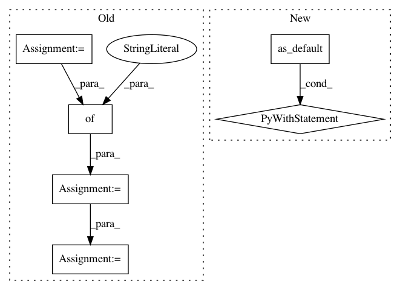

39a106e526e70b5d64bf9f5404311eb490df6ea5,inference_worker.py,,main,#,32
Before Change
batch_size=server_config.batch_size,
descriptor_path=FLAGS.descriptor)
n = dual_net.DualNetwork(FLAGS.model, worker_config)
outputs = {
"features": n.sess.graph.get_tensor_by_name("unflatten_features:0"),
"dummy": n.sess.graph.get_tensor_by_name("put_outputs:0"),
}
output = n.sess.run(outputs)
for f in output["features"]:
print("---------------------------")
for r in range(go.N):
row = ""
for c in range(go.N):
if f[r][c][0]:
row += " 0"
elif f[r][c][1]:
row += " 1"
else:
row += " ."
print(row)
if __name__ == "__main__":
flags.FLAGS(sys.argv, known_only=True)
main()
After Change
config = tf.ConfigProto()
config.gpu_options.allow_growth = True
sess = tf.Session(graph=tf.Graph(), config=config)
with sess.graph.as_default():
loop = dual_net.model_inference_worker_fn(worker_config)
tf.train.Saver().restore(sess, FLAGS.model)
print("running graph")
sess.run(loop)
In pattern: SUPERPATTERN
Frequency: 3
Non-data size: 6
Instances
Project Name: tensorflow/minigo
Commit Name: 39a106e526e70b5d64bf9f5404311eb490df6ea5
Time: 2018-06-12
Author: tmadams@google.com
File Name: inference_worker.py
Class Name:
Method Name: main
Project Name: tensorflow/hub
Commit Name: 0645b446e61e3e51e00c20a2f925111dcd29e264
Time: 2018-07-31
Author: robbie.haertel@gmail.com
File Name: examples/image_retraining/retrain.py
Class Name:
Method Name: export_model
Project Name: dpressel/mead-baseline
Commit Name: 57591a23e73d3b2ca8132589e68c8a480f1686f5
Time: 2020-04-28
Author: dpressel@gmail.com
File Name: baseline/tf/lm/model.py
Class Name: LanguageModelBase
Method Name: load